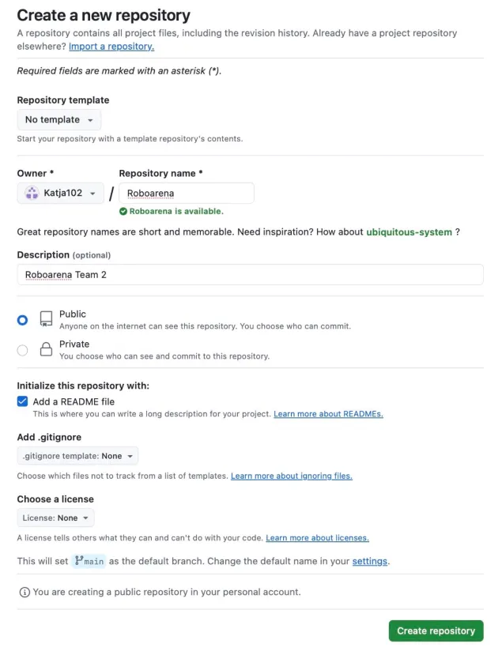
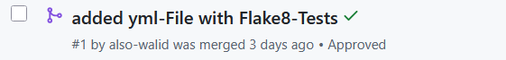
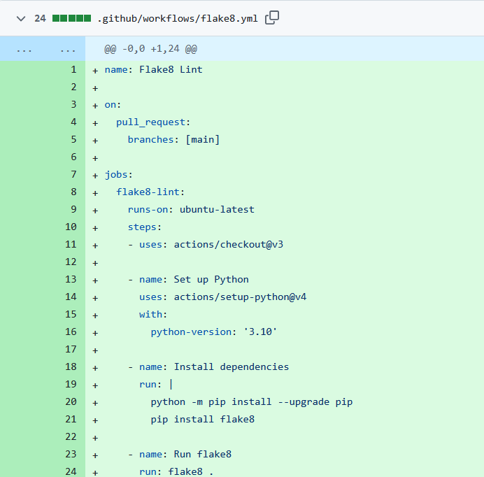
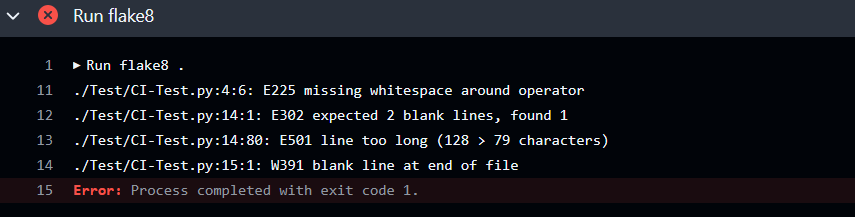
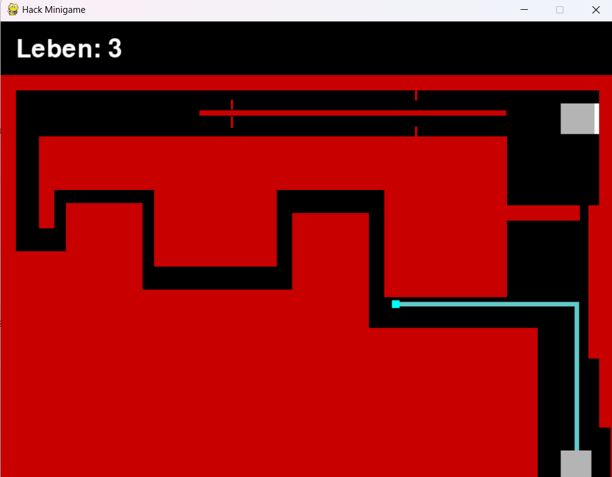
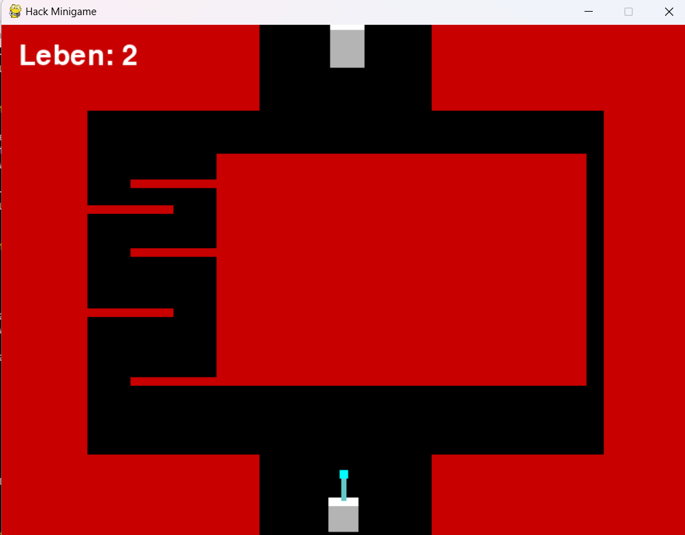
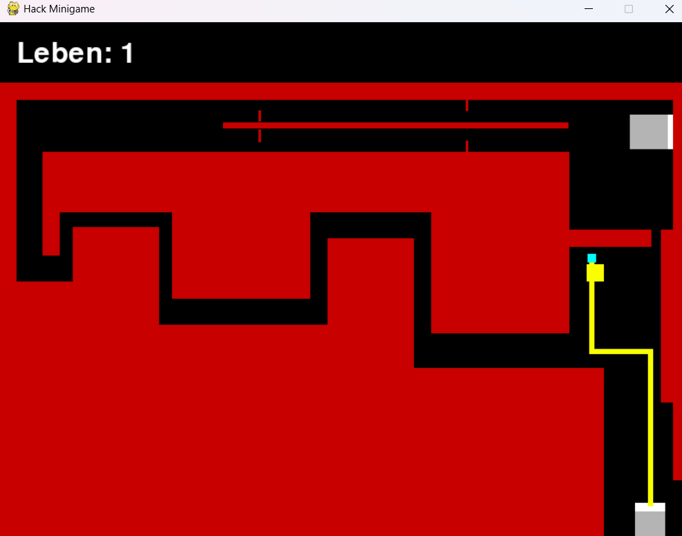
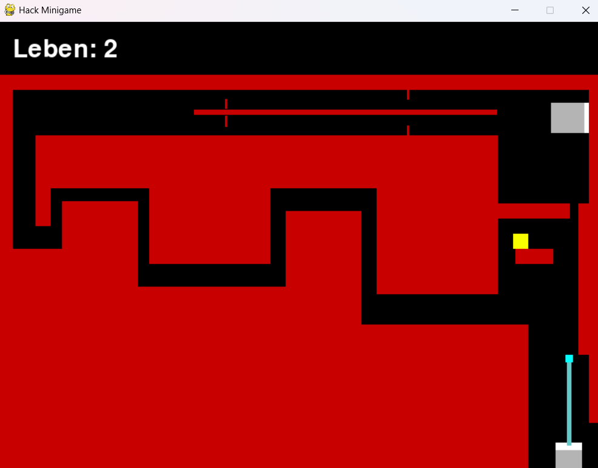

hier gehts zum Repository


Um zu prüfen, ob der Test auch funktioniert haben wir in einem Testbranch eine Datei erstellt, die einige Probleme enthält:

Und tatsächlich hat unser Test die Probleme erkannt!

Gestartet haben wir mit einem Spiel, bei dem man ein Viereck mit Hilfe der Pfeiltasten der Tastatur
durch ein Labyrinth bewegen muss. Ziel des Spiels ist es, den Zielbereich zu erreichen.
Trifft man die Wände, verliert man ein Leben, wobei man mit 3 Leben startet. (Walid)

Dann hat jedes der anderen Teammitglieder das Spiel Stück für Stück erweitert.
Es folgte...
... ein 2. Level, (Katja)

... ein Slowdown-Button, der das Viereck kurzzeitig verlangsamt (Sarah)

... und eine sich bewegende Wand, die sonst aber wie alle anderen Wände funktioniert.
(Nico)

Die Änderungen wurden alle auf separaten branches erstellt und nach Pull Requests und Reviews in den main branch gemerged.